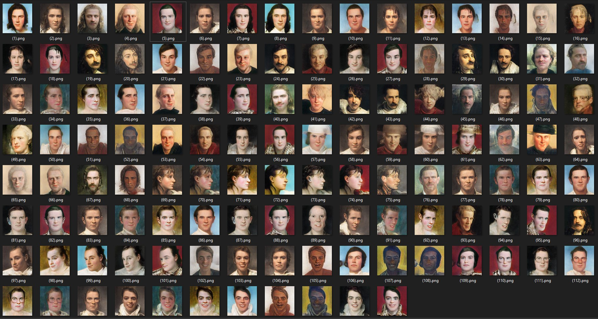
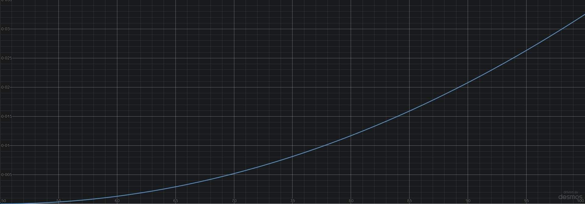
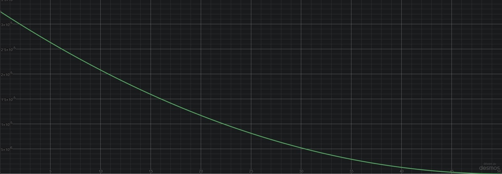

Futuregames · Game project
Mare Nostrum
Singleplayer strategy game where you compete against several AI controlled characters for control over the mediterranean by the means of war or marital inheritance.
- Engine
- C++ · SFML
- Team
- 3 developers
- Length
- 10 weeks
- Year
- 2021
Display Information
Empower the player to make the right decisions
Character Window
The most important user interface in the game is the character window. Here the player can get information about all the characters and interact with them.
Family Tree
An algorithm to find a character’s relatives and display them in a manner that represents a family tree.
Event Window
An event system to notify the player about different things occuring in the game world. Through this, the AI is able to interact with the player.
Region Window
A user interface to display the information of a region. Here you can construct buildings and handle your army as well.
War Icon & Window
User interfaces displaying in depth information regarding current wars.
Date & Game Speed
User Interface used to display the current ingame date and to manipulate the game speed.
Treasury & Army Size
User interface to display the player's treasury, income and army size.
Realm Name Text
Dynamic ownership
An algorithm for displaying realm names over owned regions. They are dynamic and change position, rotation and size when regions swaps owners. Also the names of the realms changes depending of how many regions are controlled. The realm texts also fades in and out based on the level of zoom.
Portrait System
Making it personal

With the help of an awesome website I created our portraits. These are set based on gender and age and are swapped as the characters age.
Character Deaths
Making the simulation believable


I together with another developer created a system to handle inheritance between characters.
A function to calculate a character’s chance to die based on their age. It follows an exponential curve. Characters have a very small chance to die from birth that further decreases as they age but starts to increase fast after a certain age, fifty in our case.
Army Behaviour
Controlling the army
The player unit is selected by either direct clicking on it or by dragging a window over it. This is displayed to the player by a white outline around the unit.
Together we made a A* pathfinding algorithm that the units uses to traverse our map. I also made a function that displayed the player unit's current path represented as a line.
I thought it was hard to assess a unit’s strength while playing. Therefore I added small box that displayed the character’s colour and the unit’s current strength.